Calculadoras y referencias rápidas para electrónica básica
La electricidad es el flujo de electrones a través de un material conductor. Los electrones son partículas con carga negativa que se mueven cuando hay una diferencia de potencial (voltaje) entre dos puntos de un circuito.
La diferencia de potencial entre dos puntos. Es la "fuerza" que empuja a los electrones a moverse por el circuito.
Unidad: Volt [V]
La cantidad de electrones que pasan por un punto del circuito por segundo. A mayor voltaje y menor resistencia, más corriente.
Unidad: Ampere [A] · mA = 0.001 A
La oposición al paso de corriente. Todos los materiales tienen alguna resistencia. Depende del material, longitud y grosor del conductor.
Unidad: Ohm [Ω] · KΩ = 1000 Ω · MΩ = 1 000 000 Ω
Los electrones fluyen siempre en el mismo sentido. La tensión es constante.
Ejemplos: pilas, baterías (LiPo, plomo-ácido), USB, fuentes reguladas, paneles solares.
Los electrones invierten su sentido periódicamente. En Argentina: 220 V a 50 Hz (50 ciclos por segundo).
Ejemplos: red eléctrica del tomacorriente, transformadores, generadores.
La CA permite usar transformadores, dispositivos que pueden subir o bajar el voltaje con muy poca pérdida. Esto es fundamental para la distribución de energía a larga distancia:
La CC no puede transformarse directamente sin electrónica compleja (conversores DC-DC). Por eso Tesla y Westinghouse ganaron la "guerra de las corrientes" frente a Edison a fines del siglo XIX.
La Ley de Ohm relaciona las tres magnitudes fundamentales: V = I × R. Conociendo dos, podés calcular la tercera.
La potencia indica cuánta energía consume un componente por segundo. Se mide en Watts [W].
Regla de oro: los resistores deben aguantar el doble de la potencia calculada como margen de seguridad. Un resistor de ¼W que disipa 200mW va a calentarse mucho y puede fallar.
La protoboard (o breadboard) permite armar circuitos sin soldar, ideal para pruebas y modificaciones rápidas. Los agujeros están conectados internamente por láminas metálicas con resorte que sujetan los componentes.
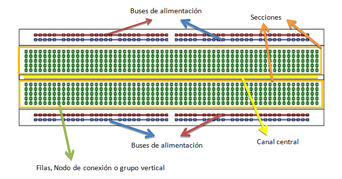
El multímetro digital (DMM) es la herramienta de medición más importante del taller. Con él medís voltaje, corriente, resistencia, continuidad y podés probar diodos y transistores. Conocer cada parte es el primer paso para usarlo bien.
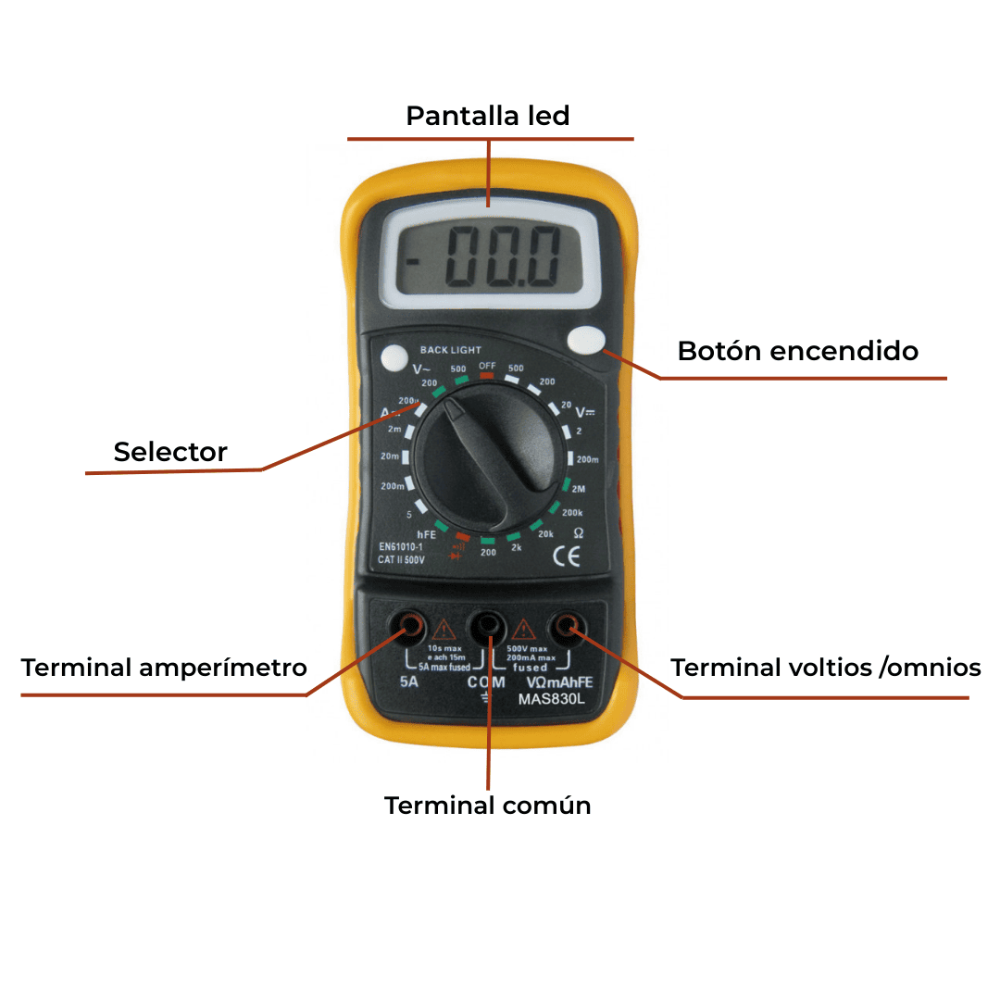
Selector: DCV (continua) · ACV (alterna)
El voltímetro se conecta en paralelo con el componente o entre los dos puntos que querés medir. No hace falta apagar el circuito.
Poner la punta negra en COM y la roja en VΩ.
Girar el selector a DCV (para baterías, fuentes, circuitos DC) o ACV (para la red eléctrica). Si el tester tiene AUTO, elegir ese; si tiene rangos, empezar por el mayor.
Apoyar la punta roja en el punto A y la negra en el punto B (referencia/GND) sin apagar el circuito.
Leer el valor en el display. Si muestra "OL" o "1.", bajar el rango. Si el valor es negativo, las puntas están invertidas.
Una vez leído, retirar primero la punta roja y luego la negra.
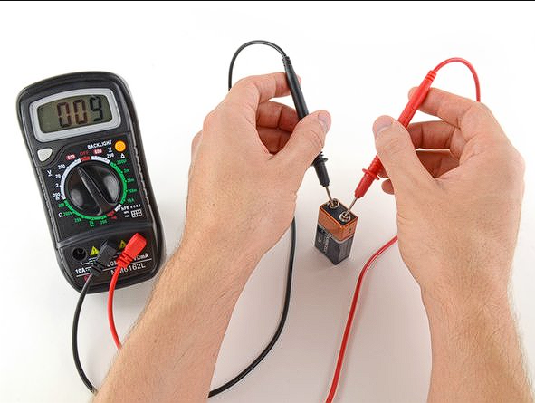
Selector: Ω (ohms) · Circuito apagado
El óhmetro inyecta una pequeña corriente propia para medir la resistencia. Por eso el circuito debe estar apagado y el componente desconectado al menos por un extremo.
Apagar el circuito y descargar cualquier capacitor antes de medir. La tensión residual arruina la lectura y puede dañar el tester.
Desconectar al menos un extremo del componente a medir. Si queda en el circuito, las resistencias en paralelo afectan el resultado.
Selector en Ω. Si tiene rangos (200Ω, 2KΩ, 20KΩ, 200KΩ, 2MΩ), empezar por el mayor y bajar hasta que el display muestre un valor estable.
Apoyar las puntas sobre cada extremo del componente. Sostener firme pero no tocar las partes metálicas con los dedos (la resistencia de la piel altera lecturas en KΩ/MΩ).
Leer el valor. Verificar que la escala elegida tenga letra (K o M) Multiplicar por 1.000 (K) o por 1.000.000 (M) lo queu muestra el Display. Compararlo con el valor nominal del componente ± su tolerancia.
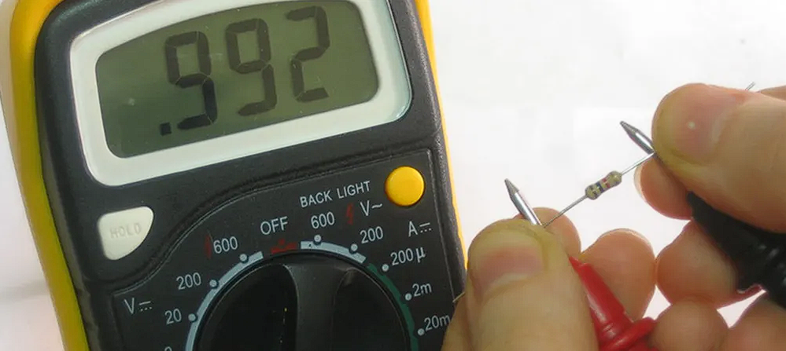
Selector: símbolo de bocina ))) o diodo con bocina · Circuito apagado
La prueba de continuidad verifica si dos puntos están eléctricamente conectados. Si hay continuidad (resistencia muy baja, generalmente < 30Ω), el tester emite un pitido. Si no hay pitido, la conexión está interrumpida.
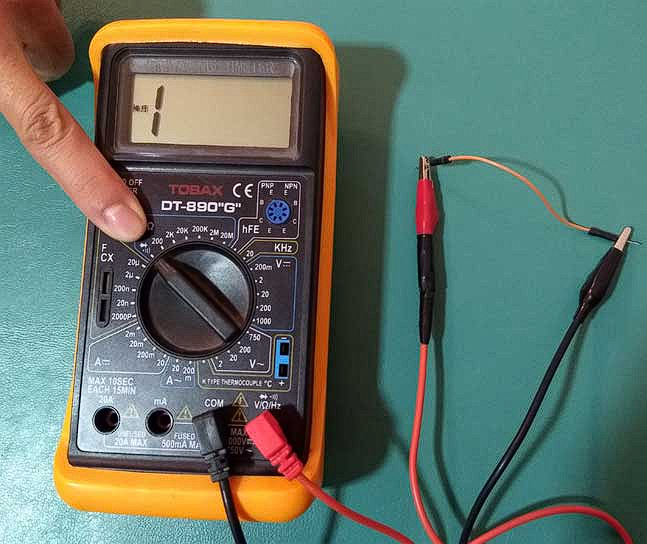
Selector: símbolo de diodo ➞| · Componente desconectado
En modo diodo el tester aplica una pequeña tensión entre las puntas y muestra la caída de tensión directa (Vf). Esto permite verificar si el diodo está bien, quemado o cortocircuitado, e incluso identificar el ánodo y el cátodo.
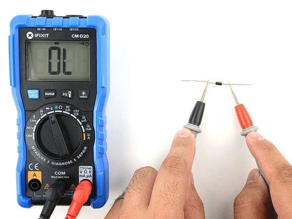
Como la unión B-E y la unión B-C de un transistor son diodos, podés usar el modo diodo del tester para identificar sus terminales e incluso determinar si es NPN o PNP:
El cautín es la herramienta que genera el calor necesario para fundir el estaño y hacer uniones eléctricas permanentes. Para electrónica se usan cautines de 25 a 40 W. Las estaciones de soldadura permiten ajustar la temperatura (ideal: 320–360°C para estaño con plomo).
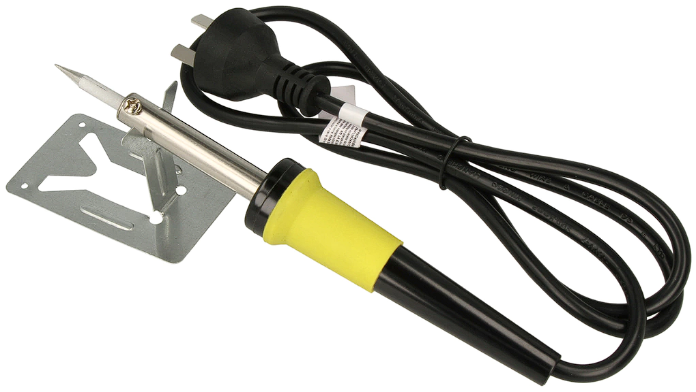
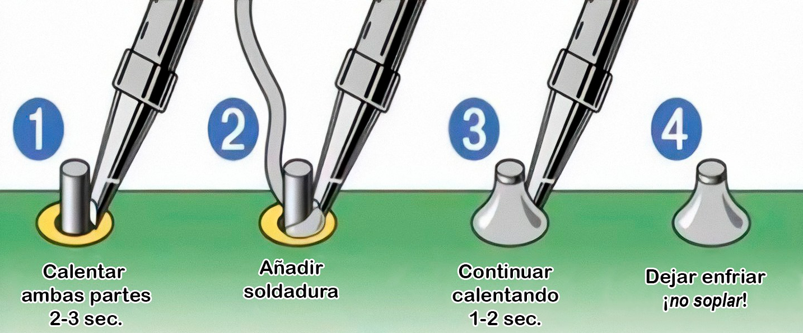
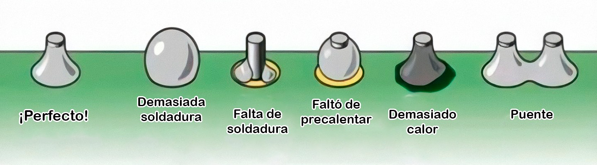
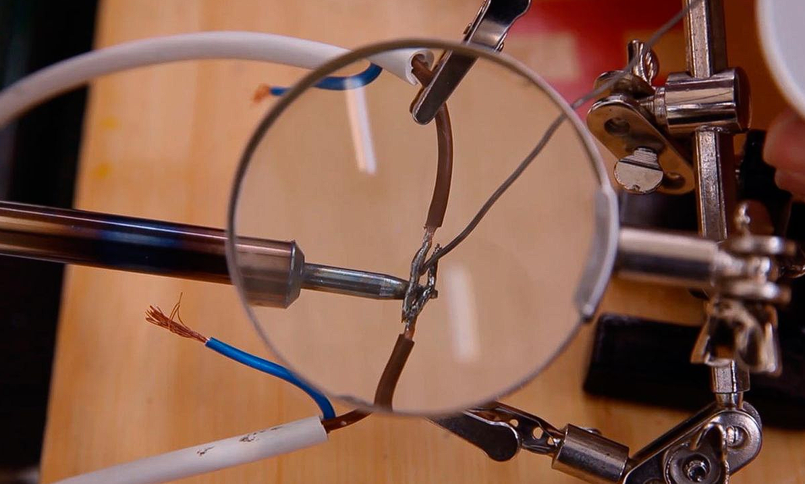
El método del fibron es la forma más accesible de fabricar una placa de circuito impreso (PCB) en el taller. El fibron actúa como máscara de resistencia: protege el cobre que querés conservar del ataque químico.
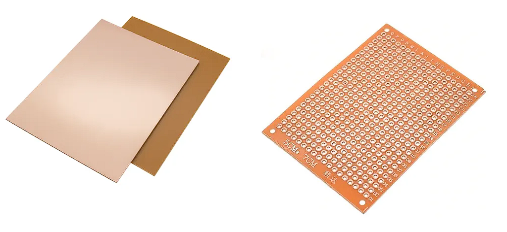
electronica/img/pcb_atacada.png
electronica/img/pcb_terminada.png
En lugar de dibujar a mano con fibron, se puede imprimir el diseño en papel satinado (de revista) con impresora láser y transferirlo al cobre con plancha a ~150°C durante 2–3 minutos.
Una resistencia se opone al paso de la corriente eléctrica. Su valor se mide en ohmios (Ω) y se identifica mediante bandas de colores. Existen de 4 bandas (comunes, ±5%) y de 5 bandas (precisión ±1% o mejor).
| Color | Dígito | Multiplicador | Tolerancia 4B | Tolerancia 5B |
|---|---|---|---|---|
| Negro | 0 | ×1 Ω (0 ceros) | — | — |
| Marrón | 1 | ×10 Ω (1 cero) | — | ±1% |
| Rojo | 2 | ×100 Ω (2 ceros) | — | ±2% |
| Naranja | 3 | ×1 KΩ (3 ceros) | — | — |
| Amarillo | 4 | ×10 KΩ (4 ceros) | — | — |
| Verde | 5 | ×100 KΩ (5 ceros) | — | ±0.5% |
| Azul | 6 | ×1 MΩ (6 ceros) | — | ±0.25% |
| Violeta | 7 | ×10 MΩ (7 ceros) | — | ±0.1% |
| Gris | 8 | ×100 MΩ (8 ceros) | — | ±0.05% |
| Blanco | 9 | ×1 GΩ (9 ceros) | — | — |
| Dorado | — | ×0.1 (÷10) | ±5% | ±5% |
| Plateado | — | ×0.01 (÷100) | ±10% | ±10% |
Un diodo permite el paso de corriente en un solo sentido: del ánodo (+) al cátodo (–). Tiene una caída de tensión directa (Vf) característica del material.
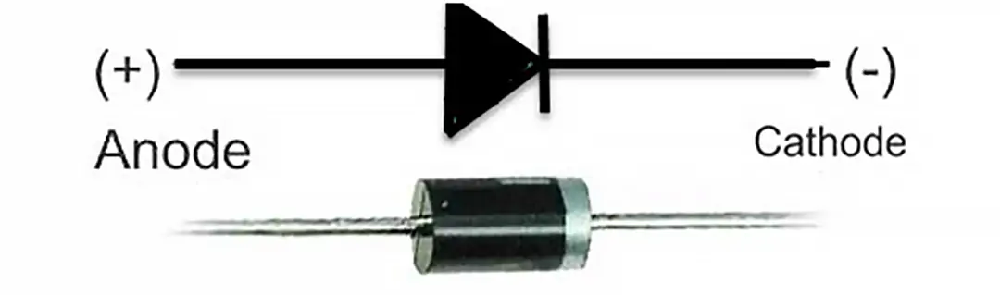
El LED emite luz al conducir corriente. Necesita siempre una resistencia limitadora para no quemarse.
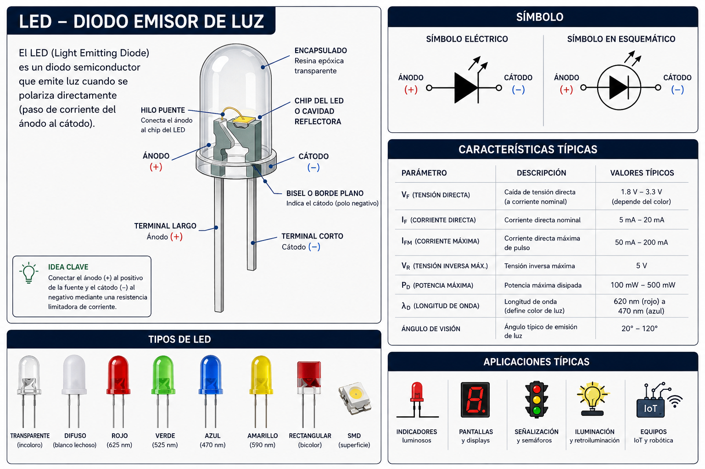
Varios LEDs encadenados. La tensión se reparte; la corriente es la misma para todos.
Varios LEDs en paralelo comparten la misma tensión. Un solo resistor para todos.
M cadenas en paralelo, cada una con N LEDs en serie. Un solo resistor para toda la matriz.
El transistor es un componente semiconductor de 3 terminales que permite amplificar señales o actuar como interruptor electrónico. Los más comunes son bipolares: NPN y PNP.
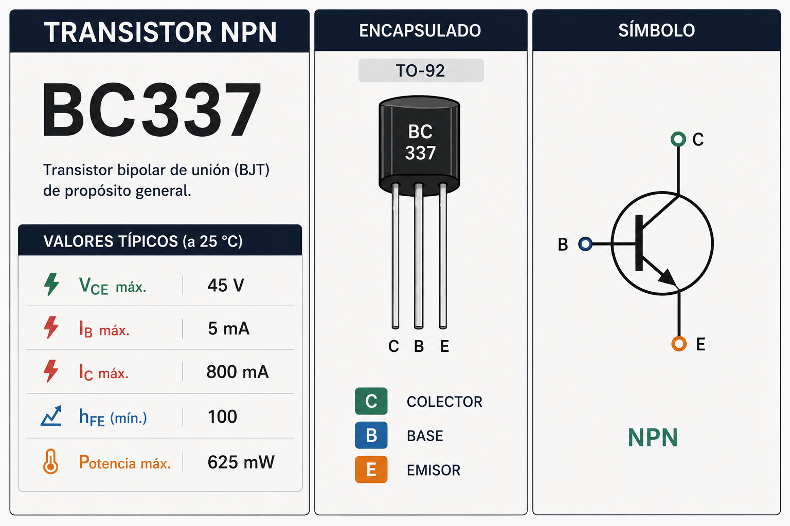
Para usar el transistor como llave (ON/OFF) hay que llevarlo a saturación. En ese estado C-E se comporta casi como un cable (VCE ≈ 0.2V).
| Transistor | Tipo | VCEO | IC máx | hFE típico | Package | Uso típico |
|---|---|---|---|---|---|---|
| BC547 | NPN | 45V | 100 mA | 110–800 | TO-92 | Señal / switch pequeño |
| BC557 | PNP | 45V | 100 mA | 110–800 | TO-92 | Señal / switch pequeño |
| 2N2222 | NPN | 40V | 600 mA | 100–300 | TO-92 | Propósito general |
| TIP31C | NPN | 100V | 3 A | 10–50 | TO-220 | Potencia media |
| TIP32C | PNP | 100V | 3 A | 10–50 | TO-220 | Potencia media |
| BD139 | NPN | 80V | 1.5 A | 25–250 | TO-126 | Audio / potencia |
El capacitor electrolítico almacena energía en un campo eléctrico. Es polarizado: tiene un terminal + y uno –. Su valor se mide en microfaradios (μF) y tiene una tensión máxima de trabajo.
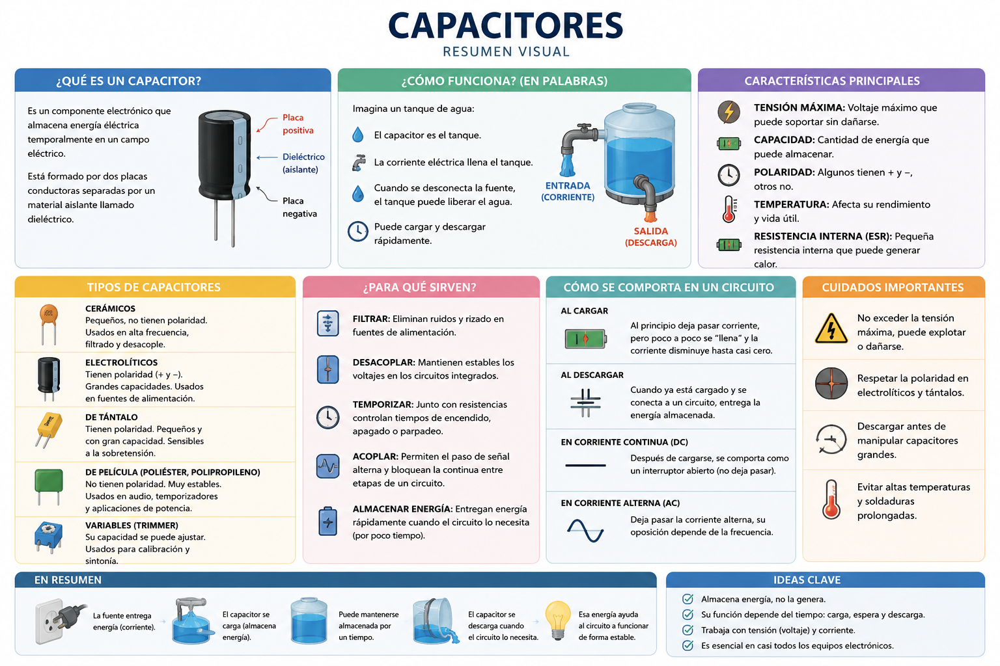
La constante de tiempo τ indica cuánto tarda el capacitor en cargarse al 63.2% de la tensión de alimentación. A los 5τ está cargado al 99.3% (considerado completo).
| Tiempo | % de carga | Descripción |
|---|
Un resistor y un capacitor en serie forman un filtro. La frecuencia de corte es el punto donde la señal empieza a atenuarse. Por debajo pasa (filtro pasa-bajos), por arriba se bloquea.
Un relé es un interruptor electromecánico controlado eléctricamente. Una pequeña corriente en la bobina activa un electroimán que mueve unos contactos, permitiendo controlar cargas de alta tensión/corriente desde un microcontrolador o circuito de baja potencia.
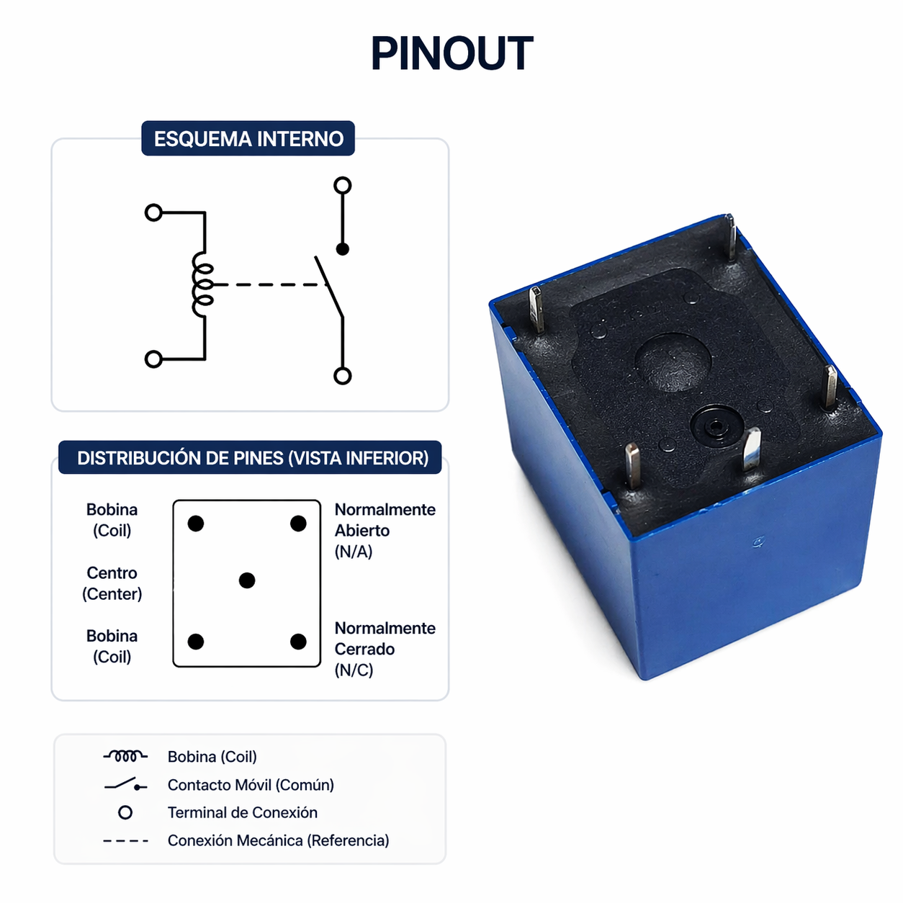
Como la bobina del relé consume más corriente de la que puede dar directamente un pin de control, se usa un transistor NPN como driver.
Calculá la resistencia de base del transistor NPN que va a activar la bobina del relé.
Los módulos de relé que se consiguen en el taller ya traen el transistor, el diodo flyback y a veces un optoacoplador integrado. Solo necesitás conectar IN, VCC y GND.
Para saber cuál es tu módulo: al arrancar el micro, ¿el relé hace "clic"? Si sí, es activo bajo. Revisá el datasheet o la serigrafía de la placa.
Una LDR (Light Dependent Resistor) es una resistencia cuyo valor disminuye cuando aumenta la luz que recibe. Se usa para detectar niveles de iluminación.
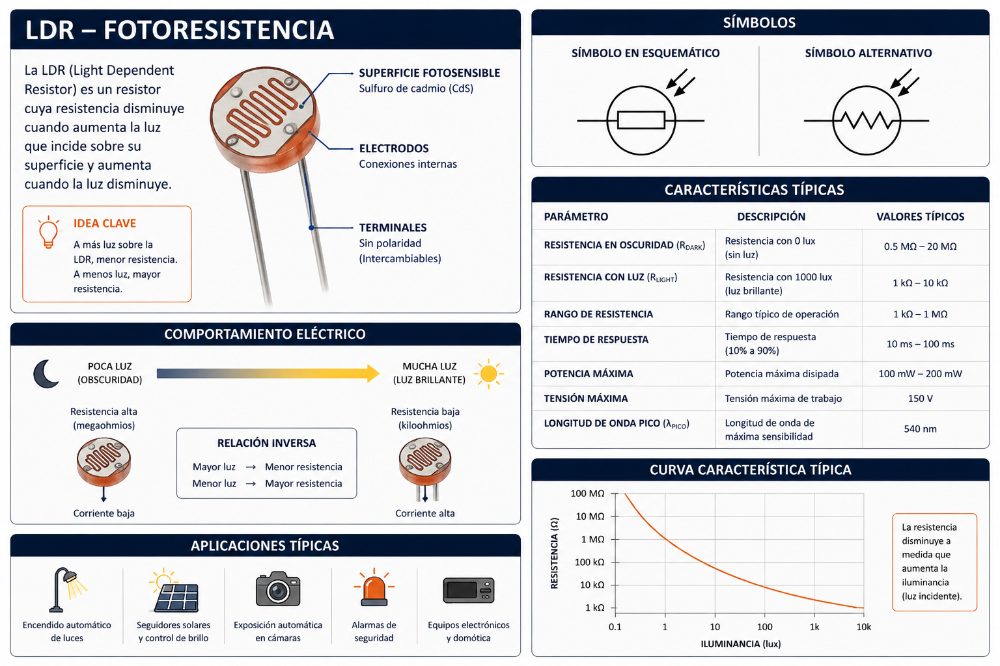
Se conecta la LDR en serie con una resistencia fija. La tensión en la unión varía con la luz.
El LED infrarrojo emite luz invisible para el ojo humano (longitud de onda 850–950 nm). Se usa en controles remotos, sensores de proximidad, comunicación IR y barreras ópticas.
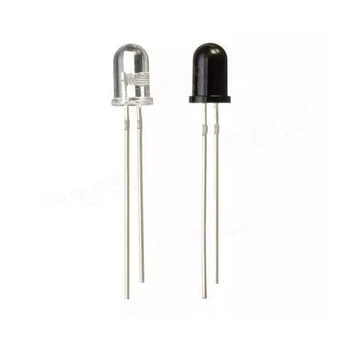
Las mismas fórmulas aplican. Usá Vf ≈ 1.2V como valor típico.
Un divisor de tensión usa dos resistencias en serie para obtener una tensión de salida menor a la de entrada. Es muy útil para adaptar niveles de señal (ej: 5V → 3.3V para entradas de ESP32) o junto a sensores como la LDR.
R1 va entre Vin y Vout. R2 va entre Vout y GND.
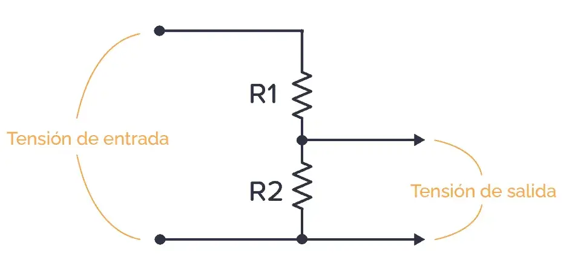
El NE555 es uno de los circuitos integrados más populares de la historia. Con solo unos pocos componentes externos (resistencias y un capacitor) puede funcionar como oscilador (modo astable) o como temporizador de un solo disparo (modo monoestable).
El 555 fue diseñado en 1971 por Hans Camenzind para Signetics. Su nombre viene de los tres resistores internos de 5 KΩ que forman un divisor resistivo de referencia. Es uno de los CI más fabricados de la historia, con miles de millones de unidades vendidas.
El 555 en modo astable genera una onda cuadrada continua. Conectá Ra entre VCC y DISCH (pin 7), Rb entre DISCH (7) y THR/TRIG (6+2), y C entre THR/TRIG y GND. RST (4) → VCC. CV (5) → cap. 10nF → GND.
Para 1 Hz con Ra=10KΩ, Rb=33KΩ, C=10μF: f = 1.44/(76000×0.00001) ≈ 1.89 Hz. Ajustando Rb podés acercarte a 1 Hz exacto.
El tiristor (o SCR) es un semiconductor de cuatro capas (PNPN) con tres terminales. A diferencia del transistor, actúa como un interruptor con memoria: un pulso en el Gate lo enciende, y permanece encendido aunque el Gate se retire. Solo se apaga cortando la corriente principal.
electronica/img/scr_pinout.png
El SCR tiene tres estados de operación:
| Característica | Transistor BJT | SCR | Triac |
|---|---|---|---|
| Terminales | B, C, E | G, A, K | G, T1, T2 |
| Tipo de señal | CC y CA | CC (y CA rectificada) | CA (ambos semiciclos) |
| Control | Continuo (señal en B) | Latching (un pulso basta) | Latching (pulso en G) |
| Apagado | Retirando señal de base | Cortar I o invertir V | Cruce por cero en CA |
| Aplicación típica | Amplificador, switch | Rectificadores controlados, protecciones | Dimmers, control de velocidad CA |
| Modelo | VDRM | IT media | IGT | IH | Package | Uso típico |
|---|---|---|---|---|---|---|
| MCR100-6 | 400V | 0.8 A | 0.2 mA | 5 mA | TO-92 | Cargas pequeñas, señalización |
| TIC106D | 400V | 4 A | 15 mA | 30 mA | TO-220 | Propósito general, AC/DC |
| BT151-650R | 650V | 7.5 A | 15 mA | 40 mA | TO-220 | Control de motores, dimmers |
| 2N6504 | 400V | 25 A | 30 mA | 100 mA | TO-220 | Alta corriente, rectificadores |
El Gate del SCR necesita una corriente mínima (IGT) para dispararse. Se coloca una resistencia en serie para limitar esa corriente.
El Triac es equivalente a dos SCR en antiparalelo. Conduce en ambos semiciclos de la corriente alterna, lo que lo hace ideal para controlar cargas CA como lámparas, calefactores y motores.
electronica/img/triac_dimmer.png
Un regulador de voltaje mantiene una tensión de salida fija sin importar variaciones en la tensión de entrada o en la carga. Son esenciales en cualquier fuente de alimentación.
Tres pines: IN, GND, OUT. Solo necesitan dos capacitores de filtro (típico: 0.1μF cerámica en IN y OUT a GND). Corriente máxima: 1 A (en TO-220). V_in mínima = V_out + 2V (margen de dropout).
| Modelo | V salida | V entrada mín. | V entrada máx. | Package | Uso típico |
|---|---|---|---|---|---|
| 7805 | 5 V | 7 V | 35 V | TO-220, TO-92 | Arduino Uno, lógica TTL |
| 7806 | 6 V | 8 V | 35 V | TO-220 | Poco común |
| 7808 | 8 V | 10 V | 35 V | TO-220 | Poco común |
| 7809 | 9 V | 11 V | 35 V | TO-220 | Efectos de guitarra |
| 7812 | 12 V | 14 V | 35 V | TO-220 | Relés, motores DC, tiras LED |
| 7815 | 15 V | 17 V | 35 V | TO-220 | Audio, amplificadores |
El LM317 permite ajustar la salida entre 1.25V y ~37V con solo dos resistencias externas.
Calculá cuánto calor disipa el regulador y si necesita disipador.
El diodo Zener conduce en polarización inversa a partir de su tensión Zener (Vz), manteniéndola constante. Se usa con una resistencia en serie para regular voltaje.